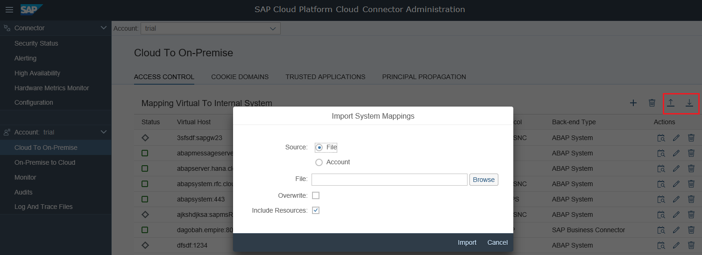

When adding new accounts, it is possible for you to copy the complete access control
settings from another account on the same Cloud connector. In case you
skip this operation, you can do it later by using the import/export mechanism provided by
the Cloud connector.
Exporting Access Control Settings
- Choose Cloud To On-Premise from your account menu and go to tab
Access Control.
- Choose the Download icon in the upper right corner to store the
current settings in a ZIP file.
- The file can be imported later into a different Cloud connector.
Importing Access Control Settings
On the screenshot below, there are two locations from which you can import access
control settings:
- From a file, which has been previously exported from a Cloud connector
- From a different account on the same Cloud connector

In addition, there are two checkboxes that influence the behavior of the import:
- Overwrite: When this checkbox is selected, all previously existing
system mappings will be removed. Otherwise, the imported ones will be merged
into the list of existing ones. Even then, if the same virtual host-port
combination exists already, it will be overridden by the imported one. By
default, imported system mappings are merged into the existing ones.
- Include Resources: When this checkbox is selected
(default), the resources that belong to the imported systems will also be
imported. Otherwise, only the list of system mappings will be imported - without
any exposed resource.